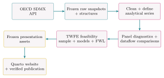

Exploring OECD How’s Life? Database—Teaching Materials
Using OECD data to learn a bit of panel data econometrics, data visualization, and reproducible, API-driven data collection
Working with Official Statistics, Reproducibly and Transparently
This project demonstrates API-based data retrieval, exploratory data analysis, and panel data econometrics in R. It also encourages researchers and students to explore OECD databases as a resource for investigating political, social, and economic questions and, more broadly, to become familiar with official statistical platforms, an increasingly important skill in the AI era (Boarini and Tiati A Biscene 2026).
The OECD How’s Life? Well-being Database, part of the OECD WISE Centre — Centre on Well-being, Inclusion, Sustainability and Equal Opportunity’s broader work on measuring well-being and progress, brings together indicators on current well-being, well-being inequalities, and the resources that underpin future well-being (OECD 2026d).
This GitHub Pages project explores the database as a statistical system rather than as a mere collection of downloadable tables.
The Current well-being dataset serves as the primary example throughout the project.
Geographic Coverage
Which countries—or, in OECD terminology, reference areas, a broader term that includes geographic units beyond countries—are actually represented in the Current well-being dataset?
The interactive matrix in Figure 1 maps reference-area coverage across the analytical series.
Loading country coverage…
Figure 1 can be read in either direction: which reference areas are covered by a given series, and which series are available for a given reference area.
Coverage is evaluated against each analytical series’ own observed temporal support:
- A cell is complete when the reference area is observed in every period represented by that series.
- A cell has partial coverage when the reference area is observed in some, but not all, of those periods.
- A cell has no observations when the series contains no observation for that reference area.
One database, six datasets
While the official name is OECD How’s Life? Well-being Database (OECD 2026d), this project may also use the shorter forms “OECD How’s Life? Database” and “OECD Well-being Database”—or simply “How’s Life? Database” and “Well-being Database” when the OECD context is clear.
Official OECD documentation describes the database as consisting of six datasets: current well-being, current well-being vertical inequalities, current well-being by age, educational attainment, sex, and resources for future well-being (OECD 2026b). The project may therefore also use the phrase “How’s Life? datasets”.
The project retrieves all six registered How’s Life? datasets through their corresponding SDMX dataflows, preserves raw responses and structural metadata locally, evaluates their panel structure, and compares the main Current well-being dataset with its age-, sex-, and education-specific counterparts.
A useful mental model
Think of the OECD How’s Life? resources as a set of related layers:
- OECD Well-being Framework —The conceptual layer
11 dimensions of current well-being; inequalities examined through population-group gaps, vertical inequalities, and deprivations; and four types of resources for future well-being—economic, natural, human, and social capital (OECD 2026d).
- OECD How’s Life? Well-being Database—The statistical layer
80+ indicators that operationalize the Well-being Framework (OECD 2026d).
- OECD Data Explorer—The dissemination layer
Six related How’s Life? datasets exposed through SDMX dataflows (OECD 2026b).
- SDMX structure and API—The technical layer
Structures that define how the data are organized and an API that provides programmatic access to observations (OECD 2025).
- OECD Well-being Data Monitor—The interactive layer
Tools for visualizing and exploring the How’s Life? indicators and their underlying data (OECD 2026c).
Reference area
OECD uses the SDMX concept reference area, or REF_AREA, rather than simply country because an observation may refer not only to an individual country but also to another geographic area or a country grouping (OECD 2026a).
The project therefore retains reference area when referring to this SDMX dimension.
Analytical series
OECD uses the SDMX dimension measure, or MEASURE, to identify a substantive How’s Life? measure (OECD 2026a, 2026d); for example:
Gender wage gapHomicidesSocial SupportStudent science skillsNot having a say in government
There are 68 distinct MEASURE codes in the downloaded Current well-being data used by this project.
For panel analysis, this project defines an analytical series as a distinct combination of MEASURE, UNIT_MEASURE, AGE, SEX, EDUCATION_LEV, and DOMAIN, leaving REF_AREA and TIME_PERIOD free to vary; for example:
Social Support— OldStudent science skills— FemaleNot having a say in government— Secondary education
This produces 302 analytical series in the current project snapshot.
That said, the term analytical series is project-defined. Official OECD documentation does not appear to assign a single dedicated name to these particular cross-dimensional combinations.
Accordingly, both 68 and 302 are quantities derived from the downloaded OECD data rather than official headline counts. They can change with the dataflow version, filters, or underlying data snapshot.
In the current snapshot, including UNIT_MEASURE and DOMAIN in the analytical-series definition does not change the resulting number of series.
Statistical series
The project-defined analytical series should not be confused with an SDMX statistical series.
In SDMX, a series groups observations that share the same values on the identifying dimensions except for the dimension along which the series varies—most commonly time (SDMX 2020).
In this project, by contrast, an analytical series fixes:
MEASUREUNIT_MEASUREAGESEXEDUCATION_LEVDOMAIN
While allowing both REF_AREA and TIME_PERIOD to vary.
An analytical series therefore represents a potential reference-area–time panel rather than an individual SDMX statistical series.
What This Project Investigates
Beyond illustrating a systematic approach to data collection and analysis using the OECD API, the project aims to answer the following questions:
- How is the How’s Life? database represented in the OECD SDMX API?
- Which project-defined analytical series form useful reference-area–time panels?
- How balanced are those panels, and where are the gaps?
- Are the demographic dataflows reproducible from the main Current well-being dataflow, or do they contain distinct observations?
- What does a research-ready panel extract look like in practice?
- How can panel data econometrics be applied to OECD How’s Life? data?
This website presents frozen results
This website presents frozen results and does not provide datasets for download. In fact, one of its purposes is to emphasize the importance of retrieving data directly from official statistical platforms.
Raw OECD downloads are excluded from version control in the public GitHub repository.
Although the repository supports reproduction of the workflow, exact reproduction of the published numerical results additionally requires access to the preserved raw responses and structural metadata used for that build.
According to official OECD documentation, the Data Monitor and its underlying Data Explorer data are updated on a rolling basis, at least quarterly (OECD 2026c).
The presentation build relies on local cached artifacts and presentation-layer R code rather than rerunning the analytical pipeline or contacting the OECD API.
Interactive displays likewise read from local JSON snapshots, so their browser-side summaries do not refresh the underlying source data.
A later API request may return revised data even when the dataflow version remains unchanged.
The website could certainly be programmed to update automatically, but doing so falls outside the scope of this project.
Workflow
Figure 2 presents project workflow from OECD retrieval to frozen analytical results and website publication:

Computational Infrastructure
For further details on the computational infrastructure behind this website and instructions for reproducing the analysis, see the project README.
OECD
says
This website uses the OECD API to teach reproducible
R workflows.
For authoritative and up-to-date technical guidance,
consult the official OECD documentation.